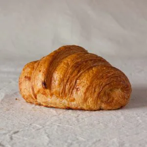
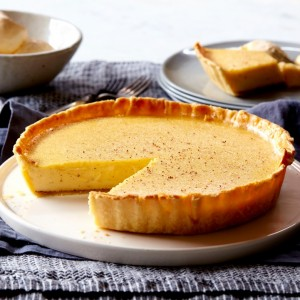
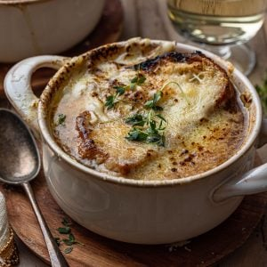
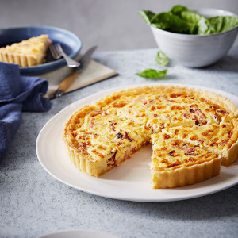
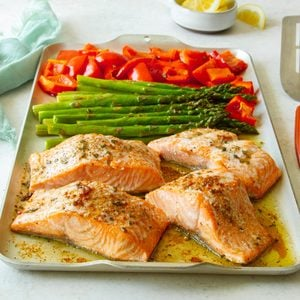
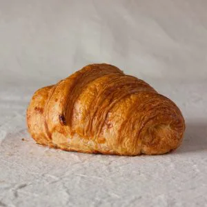
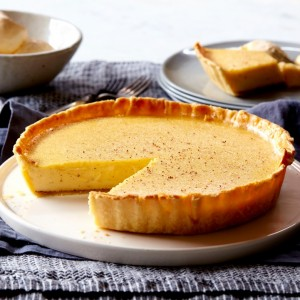
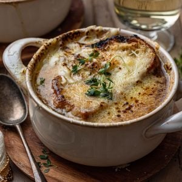
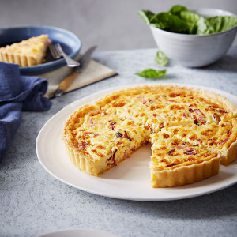
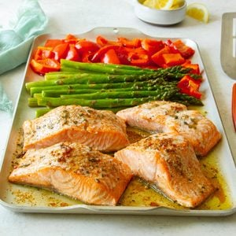

Basic Media Queries
The stars whispered secrets to the night, painting the sky with tales of wonder.
- Lost in the labyrinth of time, echoes of history weave a tapestry of stories.
- The breeze whispered secrets as it danced through the trees, carrying tales of distant lands.
In the heart of the bustling city, amidst the cacophony of sounds and the whirlwind of activity, a sense of serenity found its place, quietly lingering in unexpected corners.
 








